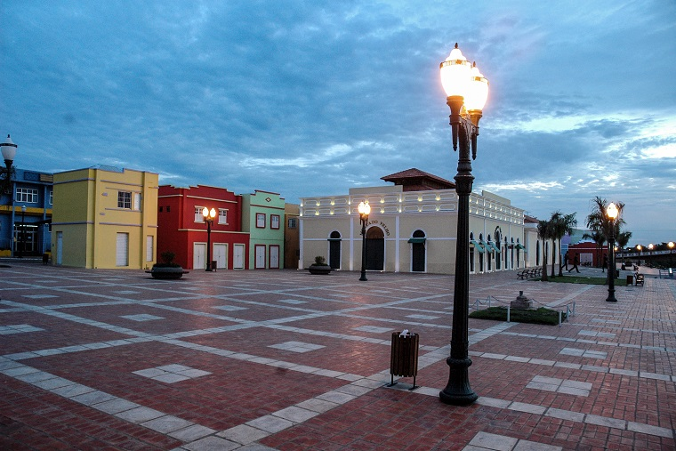

O Acre é um estado brasileiro localizado na região Norte do país. É o segundo menor estado em área territorial e possui uma população de aproximadamente 900 mil habitantes. A capital é Rio Branco, que é também a maior cidade do estado. O Acre é conhecido por sua rica biodiversidade, com vastas áreas de floresta amazônica, e por sua cultura indígena e seringueira. Além disso, o estado tem uma economia baseada na agropecuária, extrativismo e turismo ecológico.
 >